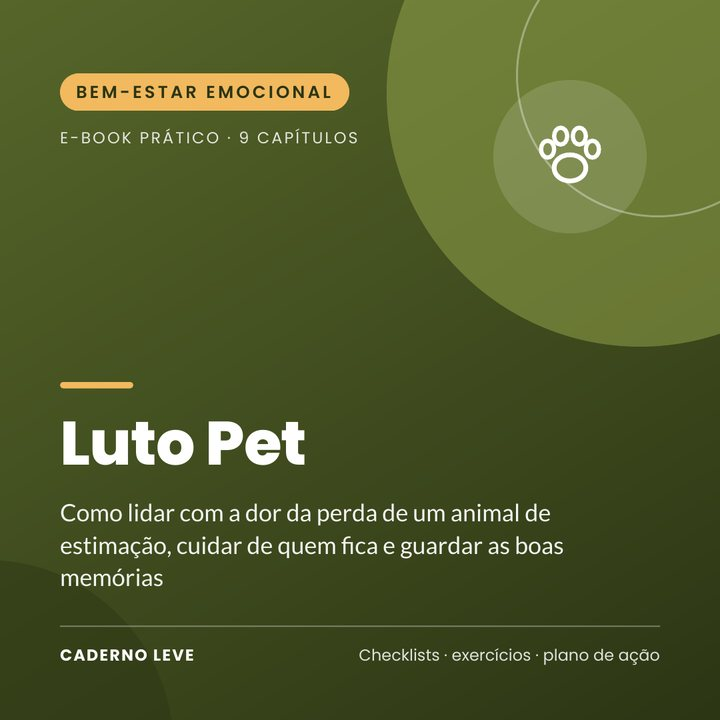

Luto Pet: Quando o Amigo de Quatro Patas Parte
Acolhimento para quem perdeu um animal de estimação: culpa e eutanásia, despedida e rituais, crianças, outros pets da casa, homenagens e folha de memórias.
O link de compra deste e-book ainda está sendo configurado na Kiwify.
Pagamento seguro e entrega do PDF pela Kiwify
A casa ficou silenciosa demais? A dor de perder um animal de estimação é real, e merece ser acolhida.
O Luto Pet é um e-book acolhedor e prático, em linguagem simples, para quem perdeu um cachorro, gato ou outro animal querido, e para quem quer apoiar alguém nesse momento.
Você entende o que é comum sentir, encontra apoio para lidar com a culpa (especialmente após a eutanásia), conhece opções de despedida e rituais, aprende a conversar com as crianças, a cuidar dos outros animais da casa e a criar homenagens que transformam a dor em gratidão.
O que você vai conquistar
- Entender e acolher o luto pelo seu animal
- Lidar com a culpa após a eutanásia ou uma perda repentina
- Conhecer opções de despedida e ideias de rituais
- Conversar com as crianças sobre a morte do pet
- Cuidar dos outros animais que ficaram
- Criar homenagens e guardar as memórias
O que tem dentro
- Capítulo 1Uma dor que merece respeito
- Capítulo 2O que é comum sentir
- Capítulo 3Quando a decisão foi nossa
- Capítulo 4Despedida e rituais
- Capítulo 5Os primeiros dias sem ele
- Capítulo 6Conversando com as crianças
- Capítulo 7Os outros animais da casa
- Capítulo 8Homenagens e memórias
- Capítulo 9Um novo companheiro? E quando buscar ajuda
- ExtraResumo e plano de ação para colocar em prática
- ExtraFolha de trabalho e checklist para imprimir
Para quem é
- Tutores que perderam ou estão perdendo um animal querido
- Pais que precisam conversar com os filhos sobre a perda do pet
- Quem quer apoiar um amigo em luto pet
Para quem não é
- Não substitui psicoterapia nem orientação veterinária
- Não impõe prazos para a saudade
Bônus: Folha de memórias — espaço para registrar a história do seu companheiro e checklist de autocuidado.
Aviso importante
Este e-book tem caráter educativo e de autocuidado. Ele não faz diagnóstico, não é tratamento e não substitui psicoterapia nem acompanhamento médico. Se o sofrimento estiver intenso, durando muito tempo ou atrapalhando sua vida, procure um(a) psicólogo(a), um médico ou a Unidade Básica de Saúde (UBS) mais próxima.
Se você precisar conversar agora, o CVV atende de graça, 24h, no 188 ou em cvv.org.br. Em emergência, ligue SAMU 192.